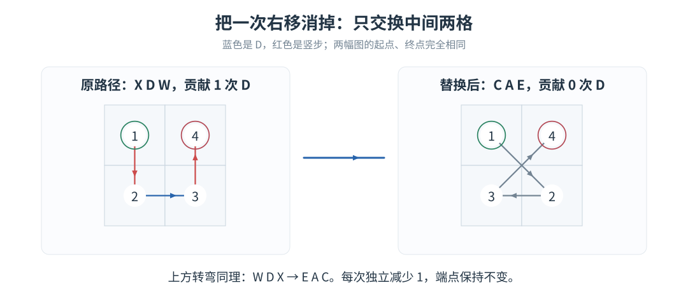
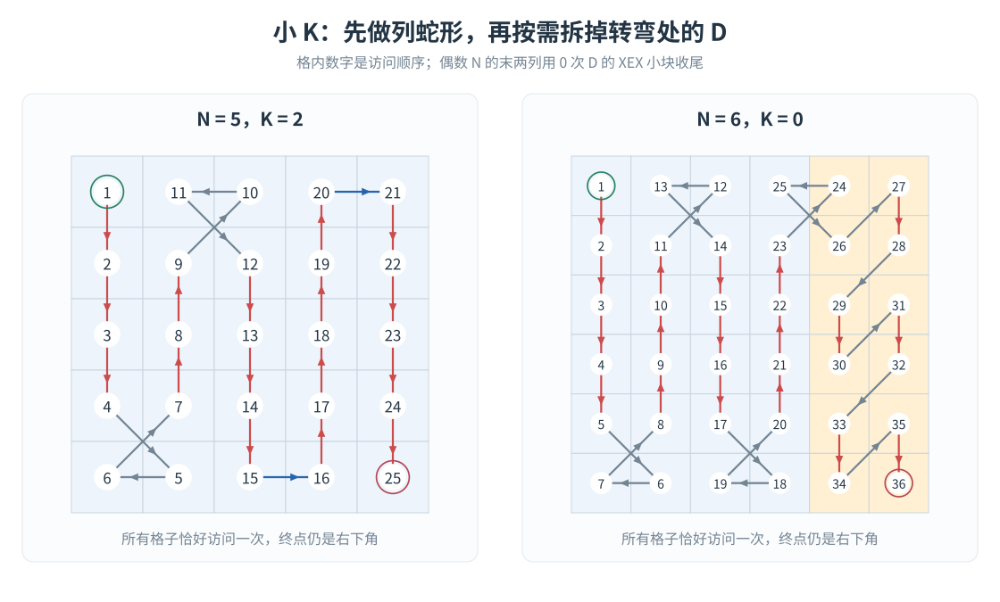
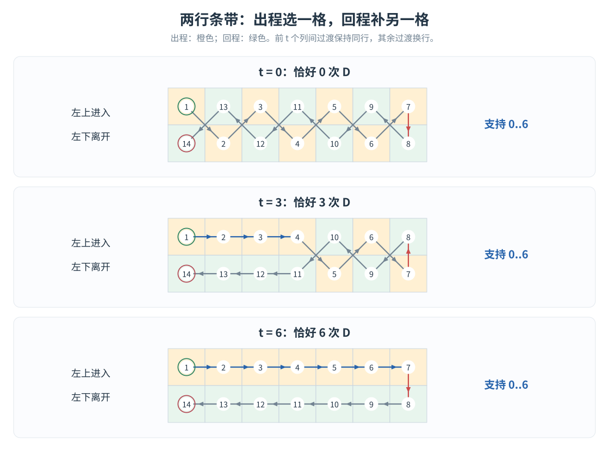
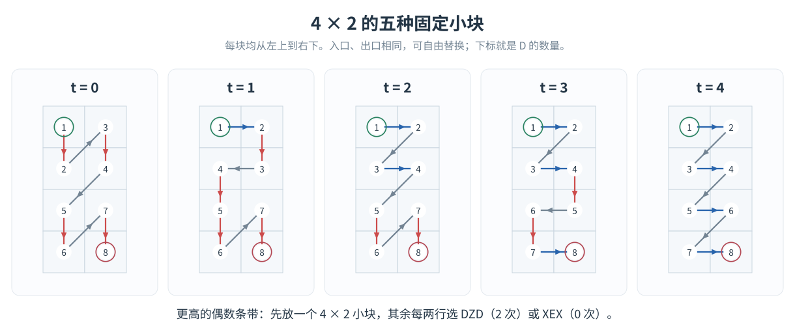
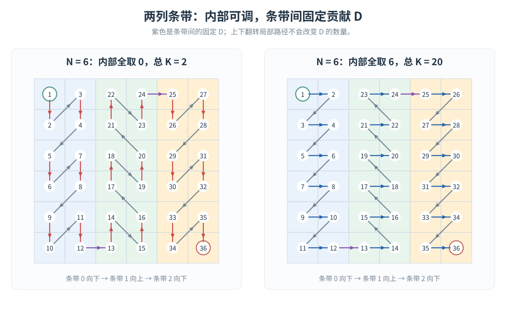
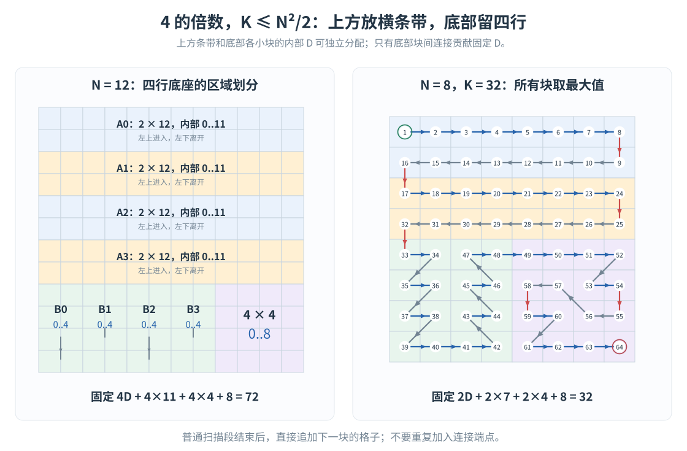
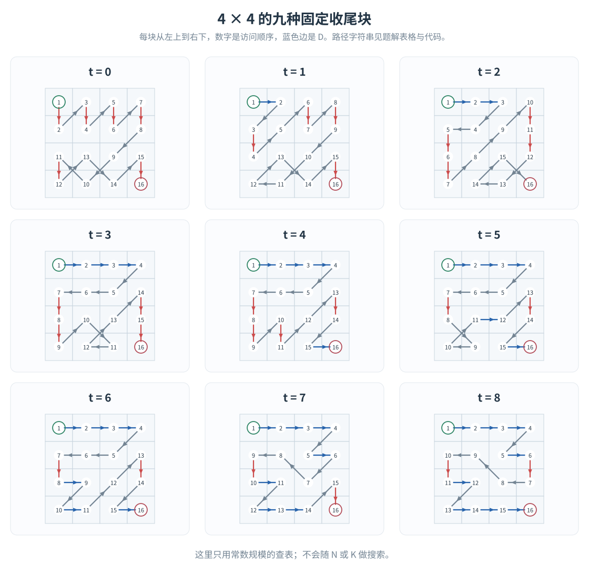
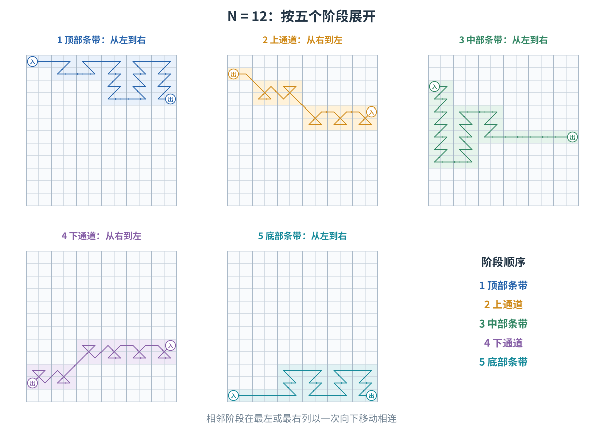
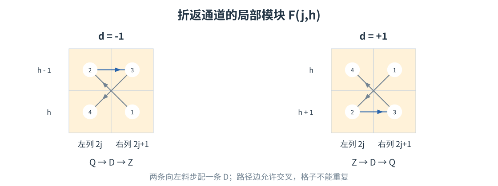
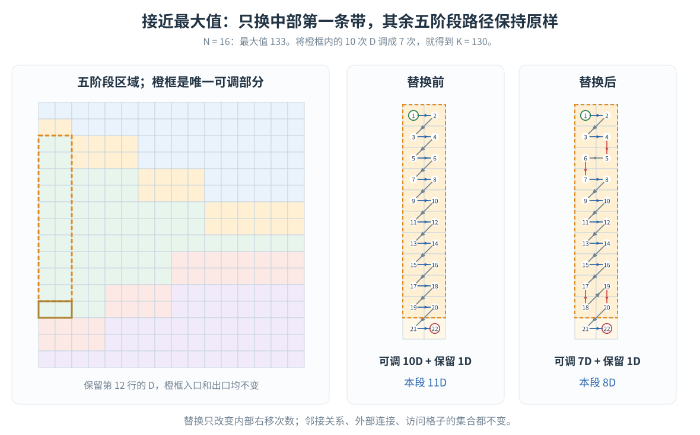

LRUD
Moving：指定右移次数的构造
给定
，从左上角出发，恰好访问每个格子一次，最后停在右下角，并且恰好走
次正右方向的 D。这里不再预设
，因此也要处理接近真正最大值的情况。
本文沿用 LRUD Moving 4
的最大值结论和五阶段路径，重点解释：怎样在保持入口、出口不变的前提下，调节路径中的
D 数量。 最大值的证明不再重复。
行列坐标均从
开始。允许斜边相交；只要求格子不被重复访问。
1. 先判断是否有解
记 LRUD Moving 4 中求出的最大值为
判定规则十分简单：
-
或
：无解。
- ：无解。
- 其他情况：都有解。
只有两条合法路径：XEX 贡献
次 D，DZD 贡献
次
D。下面的构造会证明，
时，
没有任何空缺。
整个算法按下面的路线分支。区间有少量重叠，实现时按表中顺序选择即可。
| 情况 |
使用的构造 |
该构造支持的
|
| 奇数
，小
|
列蛇形，逐个拆掉转弯处的 D |
|
| 偶数
，小
|
前
列蛇形，末两列收尾 |
|
| 奇数
，其他
|
两行一组，最后一行向右 |
|
| ，其他
|
两列一组，上下交替 |
|
|
上方两行条带，底部四行收尾 |
|
|
五阶段最大路径，替换其中一小段 |
直到
|
2. 小
：从转弯处一次减掉一个
D
先看列蛇形的一个底部转弯：
方向串为 XDW，恰好有一次
D。交换中间两个格子的访问顺序，就变成
方向串为 CAE，不再包含 D。

交换中间两格，只减少一次
D。数字表示局部访问顺序。
四个格子的集合没变，入口、出口也没变，因此路径的其余部分完全不用修改。顶部转弯同理：
2.1 奇数
按列上下蛇形遍历，恰有
个转弯，每个转弯贡献一个 D，最后到达右下角。
任意选择
个转弯进行替换，就得到任意
。
2.2 偶数
只蛇形遍历前
列。因为列数为偶数，此时停在
。
最后两列每两行放一个 XEX 小块：
这些小块内部没有 D，块间连接也没有
D。加上进入最后两列的那一步，总共恰好有
次 D。
进入最后两列的那次 D 也处在 WDX
中，可以同样拆掉。因此支持任意
。

左图是奇数 N
的例子；右图中浅黄色区域是偶数 N 的最后两列。
实现时先生成坐标数组，再扫描原路径中的
D；需要减少时交换这条边的两个端点。各转弯被交换的两格互不重合，相邻转弯即使共享格子，也只共享未移动的外端点，所以这些替换可以独立进行。
3. 两种可以调节次数的条带
后面的构造都用下面两个工具。参数
只统计块内部的 D，块间连接要另外计数。
3.1 两行条带
：任意
在一个
矩形中，从左上进入，左下离开。
先从左往右，每列只访问一格；到最右列后竖直换到另一格，再从右往左访问各列剩下的格子。
回程始终向左，不会产生
D。出程中，相邻两列选同行就产生一个
D，选异行就产生一个右斜步。因此，只需让前
次过渡保持同行，之后每次换行。

宽度为 7 的两行条带，分别贡献 0、3、6 次
D。橙色格子属于出程，绿色格子属于回程。
设第
列出程所选的相对行号为
。一种直接的实现是
依次加入
，再倒序加入
即可。入口、出口始终是左上、左下。
3.2 偶数高度的两列条带
：任意
要求
且为偶数。从左上进入，右下离开。
一个
小块已经支持两种选择：
XEX：贡献
次 D；DZD：贡献
次 D。
但只使用它们，无法调整奇偶性。因此，先预留一个
小块，它有以下五种固定路径：
内部 D 数
|
方向串 |
| 0 |
XEXZXEX |
| 1 |
DXAXXEX |
| 2 |
DZDZXEX |
| 3 |
DZDXAXD |
| 4 |
DZDZDZD |

五个小块的入口、出口相同，可以直接相互替换。
其余
行，每两行使用一个 XEX 或
DZD。相邻小块之间用左下一步连接，不增加
D。
给定目标
，先选
若
与
奇偶性不同，就将
减一。于是
首个
小块贡献
，再让
个
小块贡献
，其余贡献
，便得到任意
。
上下翻转整个条带不会改变 D 数量。
翻转后，从左下进入、右上离开；后面会交替使用这两个方向。
4. 奇数与模 4 余
2：直接把次数分配给条带
4.1 奇数
将前
行分成
个两行条带
。每条带从左上到左下，条带之间竖直向下衔接，不增加
D。
最后一行从左往右，固定贡献
次 D。
因此，只需将
分配给前面的条带，每条带的容量为
。总容量恰好是
所以支持整个
。结合小
构造，奇数的所有可行取值均被覆盖。
4.2
将列分成
个条带
，偶数编号向下，奇数编号向上。
因为
为奇数，最后恰好在右下角结束。相邻条带之间固定走一次
D，共有
次。

同一种条带骨架，可以将内部次数全部取
0，也可以全部取 N。紫色箭头是固定连接。
只需把
分配给
个条带，每个容量为
，就覆盖
小
构造覆盖到
，两个区间之间没有空缺。
分配不需要背包。 每个模块都支持从
到容量的所有整数，因此依次取
即可。这里的“容量”指最多能放入多少次 D。
5. 四的倍数、普通
：底部留一个四行底座
以下
，先处理
。设
将整个网格划分为：
- 上方
行：分成
个两行条带
；
- 底部四行的前
列：分成
个高度为 4 的两列条带
，上下交替；
- 右下角：一个
收尾块。
为偶数，所以底部两列条带走完后，停在底座的顶行，可以向右进入最后的
小块。

左图是区域划分；右图展示 N=8、K=32
的真实路径。
收尾块从左上到右下，可以贡献任意
次
D。这只是一个常数大小的表，九条路径如下图所示；代码直接保存对应方向串，不进行搜索。

4×4
收尾块的全部九种取值。每幅图均按编号依次访问。
上方条带之间，以及上方向底座的连接，都是向下走，不增加
D。底座内部，
个两列条带与最后的收尾块之间，固定贡献
次 D。
所以将
依次分配给各块即可。总的最大值恰为
所有块都支持连续的整数区间，因此覆盖整个
。小
构造覆盖
，且
，所以区间衔接完整。
时
，整个网格就是一个收尾块，也自然包含在这个分支中。
6. 超过
：从最大路径中只换一段
对于四的倍数，普通构造停在
。剩下的取值数量只有
，没有必要重新设计整个网格：从最大路径出发，把多出来的
D 从一条长条带里扣掉。
6.1 先处理
只剩
两个值。直接保存两条固定路径即可：
K=33:
DDDZDDDQDDDZDXZDQAZDQAZDQQAXDZDZDDDDDDDXZDQAZDQAZDQZQDZXDDDDDDD
K=34:
DDDZDZDZQQDZXDZDZDZDZDDDQDQDQDDQDDQDQDQDDDZDZDZDZDXZDQQZDZDZDDD
没有超过
的可行值，不需要进入本节。
6.2
：沿用
LRUD Moving 4 的五阶段路径
设
，将列分为
个两列条带。最大路径依次访问：
三个条带段从左到右访问，两个通道段从右到左返回。五段之间恰有四次竖步，其余连接不含右斜步。

沿用 LRUD Moving 4
的五阶段走法。本题只修改第三阶段的第一条带。
为方便独立实现，这里保留五阶段的区域划分。记
通道中的折返模块为

折返模块的两种方向。通道从右进入、从左离开。
用
表示条件
成立时为
，否则为
。按下表顺序追加格子；普通扫描每行均先访问左格、再访问右格。
| 阶段 |
条带顺序 |
访问的行或模块 |
普通扫描的方向 |
| 顶部 |
|
|
奇数
向下，偶数
向上 |
| 上通道 |
|
用
；
只走
|
— |
| 中部 |
|
|
偶数
向下，奇数
向上 |
| 下通道 |
|
|
— |
| 底部 |
|
|
奇数
向下，偶数
向上 |
这些公式只是将通道占用的行预留出来。五个区域互不重叠，恰好覆盖全部格子；相邻段的首尾格本来就相邻，不能重复加入连接端点。
这条路径有
次 D。接下来只改其中一个矩形。
6.3 唯一需要改动的位置
目标比最大值少
次 D。
观察中部的第
个条带：它从第
行向下扫描到第
行，总共
行，每行原本贡献一次 D。
保留最后一行，即第
行的两个格子不动。其上方剩下
行，是一个偶数高度的两列矩形，入口为
，出口为
。这正是第
3.2 节已经解决的
！
因此，把这一段从“贡献
次 D”替换成“贡献
次 D”，整个答案就恰好从
变成
。

N=16 的例子：最大值为 133，目标为
130，只把橙框内的 10 次 D 改成 7
次。底部保留的一行和外部路径均不变。
替换一定合法，因为本分支中
所以
新旧两段使用完全相同的格子，入口、出口也完全相同。外部连接保持原样，因此不会出现遗漏、重复或不相邻。
高
的新增操作就这一处。 五阶段路径本身不用随着
改变区域划分。
7. 正确性与复杂度
最大值结论给出了
的无解判定；
的唯一空缺单独处理。对剩下的输入：
- 小
由转弯替换逐次减少
D；
- 奇数和模 4 余 2 的情况，把次数分配给支持连续区间的条带；
- 四的倍数在
以下，用横条带和四行底座覆盖；
- 超过
时，固定小例子或五阶段局部替换覆盖剩下全部取值。
每个模块都访问它负责的所有格子恰好一次，模块之间的端点相邻，整个路径从左上到右下。各部分的
D 已分别计数，因此构造满足所有要求，也证明了第 1
节的判定没有遗漏任何可行输入。
每格只加入、扫描常数次，时间、空间均为
，与输出规模一致。
8. 实现对应关系
完整 C++17 代码为 std_any.cpp。输入、输出沿用判定构造题的格式：
输入：
T
N K
N K
...
输出：
No
或者：
Yes
长度恰为 N²-1 的方向串
注意这是输入目标
的程序，与 LRUD Moving 4 中“输出最大
”的程序不同。
代码函数与题解的对应关系如下：
| 函数 |
作用 |
smallK |
列蛇形及转弯替换 |
twoRows |
两行条带
|
evenColumns |
偶数高度两列条带
|
ordinaryMultiple4 |
横条带加四行底座 |
fiveStages |
五阶段路径，扣掉 delta 次 D |
pattern |
追加固定小块，可上下翻转 |
answer |
将坐标序列转成方向字符 |
实现时最容易混淆两件事：
- 先扣固定连接的
D，再分配块内部次数。
例如两列条带蛇形先扣
，四行底座先扣
。
- 模块的坐标集合互不重叠，不额外复制连接点。
pattern 会加入它的起点，调用者不再手工加入同一个点。
方向字符由相邻坐标差查表：
Q W E
A ? D
Z X C
其中行下标为
，列下标为
。合法路径中不会取到
?。